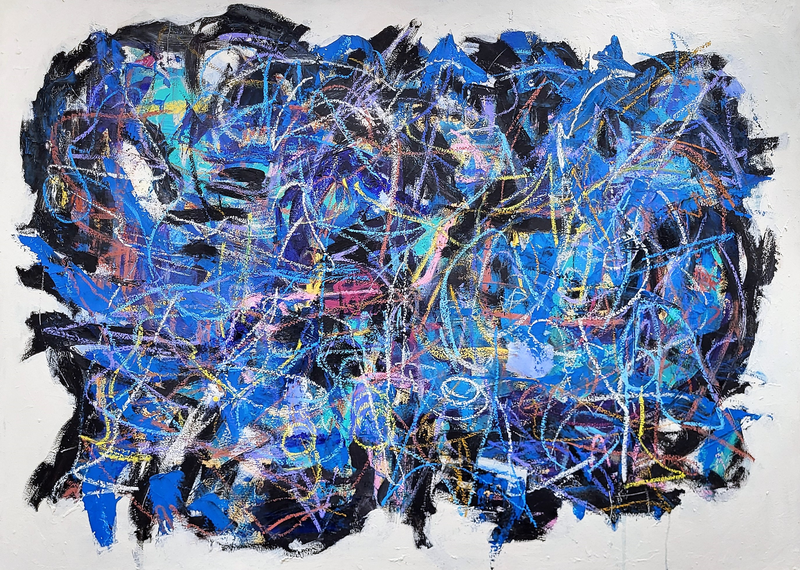
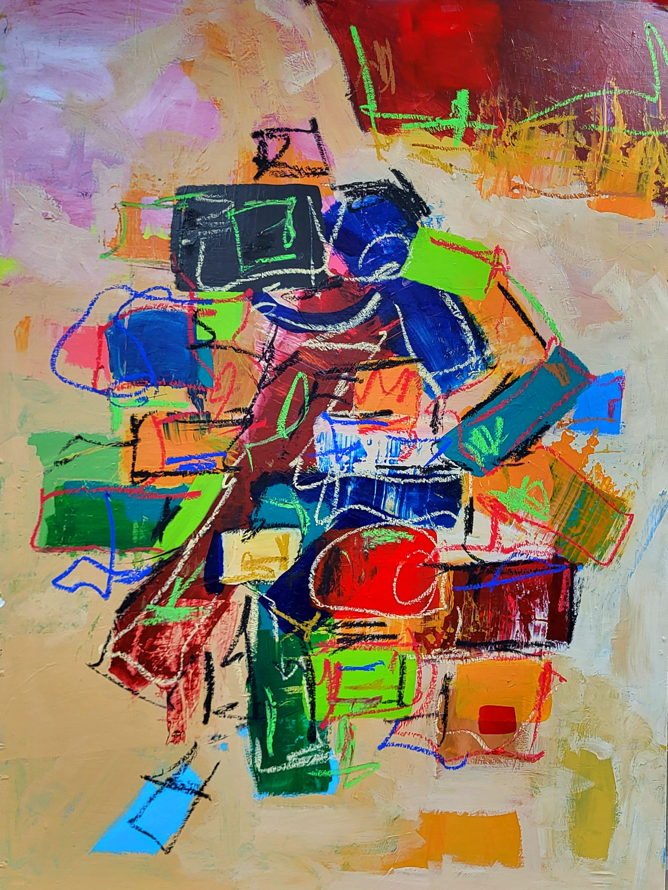
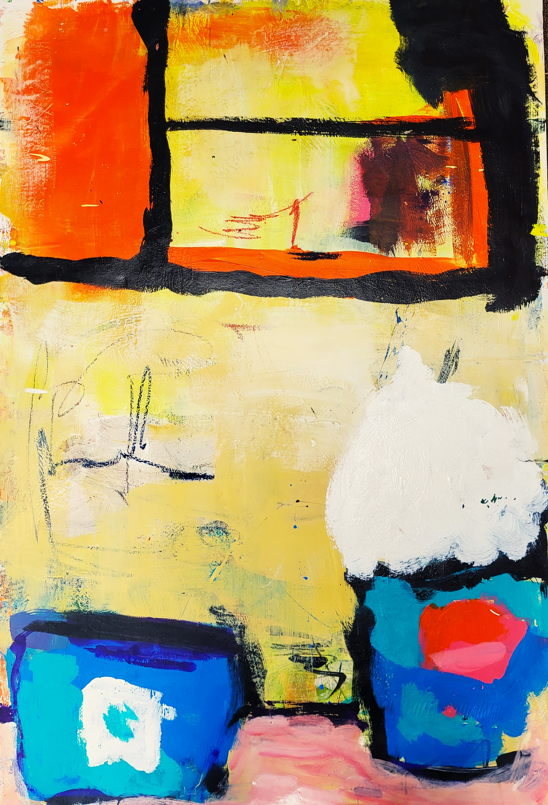

Abstract Series
A bold journey into texture, rhythm, and spontaneous composition.

Patterns Series
A vibrant exploration of texture, color, and rhythm through pattern-based abstract art.

Basquiat Series
A tribute to Jean-Michel Basquiat through expressive portraiture and chaos.

Ephemeral Glow Series
Luminous compositions that explore the fleeting nature of beauty and light.

Figurative Series
Expressive human forms filled with energy, movement, and emotion.

Harlem Renaissance Series
A celebration of Black culture through historic jazz and artistic imagery.

Luggage Mixed Media Series
Mixed media works exploring migration, memory, and movement.

Luggage Series
Minimal yet powerful, this series explores what we carry—physically and emotionally.

Men’s Series
Paintings capturing the spirit, complexity, and resilience of men through time.

Pots and Pans Series
An abstract look into domesticity, rhythm, and cultural roots through kitchen tools.

Structure Series
Architectural forms collide with vibrant geometry in this abstract series.